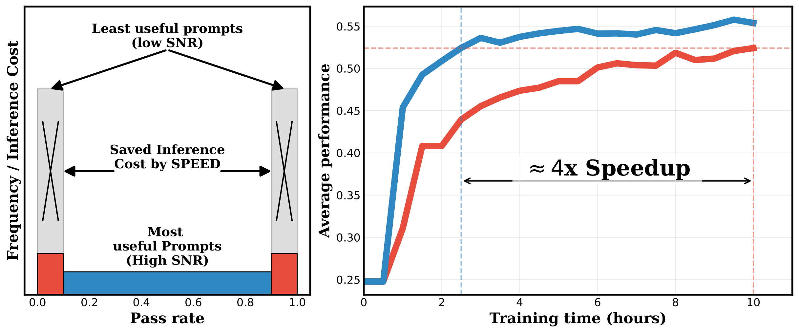
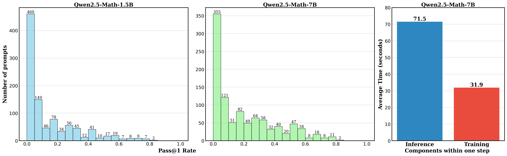
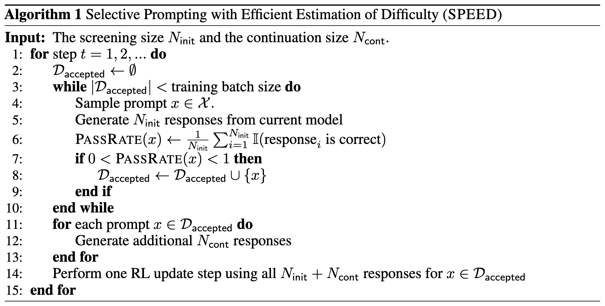
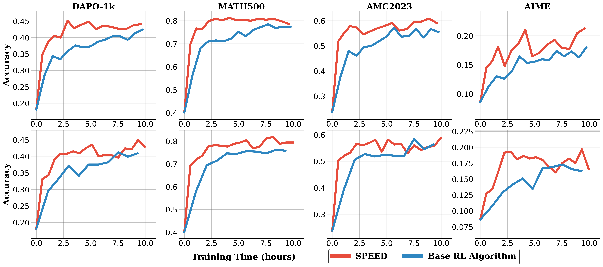
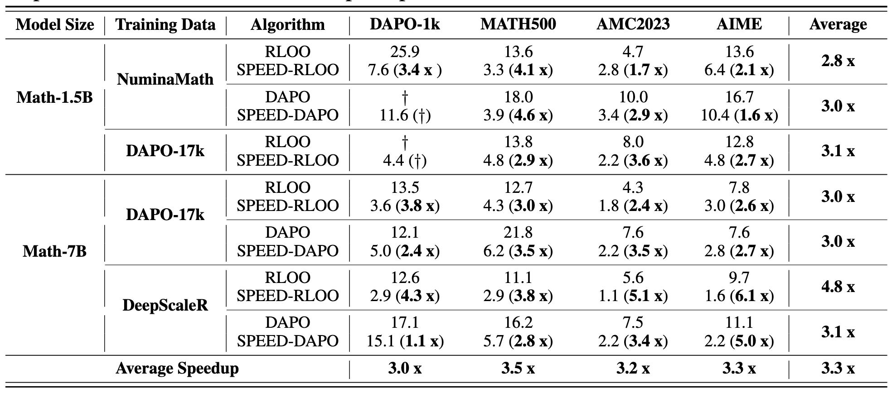

We introduced SPEED, an online curriculum learning framework that accelerates reinforcement learning (RL) training for large reasoning models by training on prompts with a high learning signal.
Traditional RL training often expends most of the compute resources on prompts with low learning signals (pass rates near 0% or 100%), which have low signal-to-noise ratio (SNR) and which may make up most of the training dataset.
SPEED efficiently identifies and excludes these low-SNR prompts before creating training batches for the RL trainer.
This ensures computational resources (inference and gradient updates) are focused on useful prompts (high-SNR ones).
SPEED achieves training speedups from 2x to 6x across various benchmarks and training configurations.
SPEED is compatible with Rule-based RL algorithms like GRPO, REINFORCE, RLOO, and DAPO.

Figure 1: SPEED expends some compute (red region, left figure) to identify and exclude low-signal (low-SNR) prompts from the training batch, ensuring the majority of compute is effectively utilized on informative prompts.
This yields an average 4× speedup across various benchmarks and training configurations (right figure; see paper for details).
Introduction
Training large language models (LLMs) with reinforcement learning (RL) against verifiable rewards significantly enhances their reasoning capabilities.
However, such methods remain computationally expensive, primarily due to inefficient uniform sampling of training prompts and the heavy inference costs associated.
In typical datasets (e.g., that used in DAPO), many prompts are either trivially easy or excessively difficult relative to the model's current training state.
LLMs spend most of the training time on inference, even generating all-correct or all-incorrect completions for those prompts that are either trivially easy or excessively difficult.

Figure 2: Pass rate distribution of 1000 samples in DAPO-17k evaluated by Qwen2.5-Math-1.5B (left) and Qwen2.5-Math-7B (middle).
Right: Average per-step inference and training times while running RLOO on the Qwen2.5-Math-7B model.
Intuitively, if the model consistently succeeds or fails, it learns little.
Formally, prompts with pass rates near 0% or 100% produce zero gradients since the advantage function approaches zero (e.g., REINFORCE gradient updates) and does not affect the gradient estimate. This can be formally shown as follows:
Consequently, we can exclude them.
However, reliably identifying informative prompts in a general and computationally efficient manner is challenging.
DAPO removes prompts with a 0% or 100% empircal pass rate after generating a large number of completions for each prompt.
This becomes computationally infeasible for large datasets as the training cost is dominated by the inference phase.
SPEED (Our proposed method) efficiently identifies and excludes low-SNR prompts to avoid these high inference costs and achieve substantial real-time speedups.
SPEED-RL: Algorithm Design
We introduce Selective Prompting with Efficient Estimation of Difficulty (SPEED), which implements a curriculum learning strategy that efficiently screens prompts to identify those with intermediate pass rates—thus maximizing the signal-to-noise ratio (SNR)—without full inference.
Screening Phase: Generate a small number (e.g., Ninit = 4) of completions for each prompt. Prompts clearly at extremes (0% or 100%) pass rate are immediately excluded.
Continuation Phase: Perform extensive inference (e.g., Ncont = 20 additional completions per prompt) only on the intermediate-difficulty prompts identified as informative.
This targeted approach allocates the majority of compute to high-value prompts. To avoid inference overhead from multiple calls, SPEED combines both phases into a single inference batch: simultaneously completing the continuation phase for current prompts and preliminary screening phase for future prompts within one single call to the efficient serving (e.g., vLLM). See our paper for additional implementation specifics. Moreover, SPEED integrates seamlessly with popular rule-based RL algorithms, including RLOO, GRPO, DAPO, and so on.

Experiments
We demonstrate SPEED's efficacy by comparing the wall-clock time to achieve certain target performance for baseline RL algorithms and for SPEED variants.
Baseline: RLOO and DAPO. We compare RLOO vs SPEED-RLOO, and DAPO vs SPEED-DAPO.
Benchmarks: 1k held-out set from DAPO-17k, MATH500, AMC23, AIME2024, and AIME 2025. See here.
Empirically, SPEED variants substantially accelerate the training compared to the baseline methods for 2x - 6x times.
For detailed empirical results, please refer to our full paper.

Figure 3: Validation accuracy on various mathematical reasoning benchmarks for SPEED-variants of RL algorithms, and base RL algorithms. Top: RLOO versus SPEED-RLOO; bottom: DAPO versus SPEED-DAPO. The initial model used is Qwen2.5-Math-7B, trained on the DeepScaleR dataset.

Table 1: Wall‑clock training hours needed for each model to reach a target accuracy on its respective benchmark. For the Qwen‑Math‑1.5B model, the targets are 0.30 on DAPO‑1k, 0.70 on MATH500, 0.4 on AMC2023, and 0.10 on AIME. For the larger Qwen2.5‑Math‑7B model, the thresholds increase to 0.45, 0.80, 0.55, and 0.18 for the same datasets, respectively. Validation time and checkpoint‑saving overhead are excluded. Values in parentheses give the corresponding wall‑clock speed‑ups.
The dagger means the performance has not reached the threshold during the entire training process.
The average speedups reported across benchmarks and training configurations are computed as the simple arithmetic mean of individual speedup values.
Insights: Why Moderately Difficult Prompts?
Theoretically, we contribute an information-theoretic justification for training on intermediate-difficulty prompts.
Recall that prompts with 0% or 100% pass rates yield zero advantage and hence zero gradient.
This also applies to the prompts with pass rates close to these extremes.
More specifically, let \(J(\theta)\) be the objective function (on some prompt \(x\)). We usually compute some stochastic gradient estimator \(J(\theta)\) to compute the updated model parameter.
We quantify informational value through the Signal-to-Noise Ratio (SNR)—defined as the ratio between the squared norm of the gradient estimator and its variance.
A corollary of the standard SGD analysis shows that the expected reward improvement can be lower-bounded by a function of the SNR.
More specifically, let \(\theta\) be the model parameter and \(\theta^{+}\) be the updated model parameter. Then, given the stochastic gradient estimator is unbiased and \(J(\theta)\) is 1-smooth, the expected reward improvement can be lower-bounded by:
\[
\mathbb{E}\left[J(\theta^+)\right] - J(\theta) \geq
\frac{1}{2} \left\| \nabla_{\theta} J(\theta) \right\|^2 \left(1 - \frac{1}{\text{SNR}}\right).
\]
Therefore, if the SNR approaches zero, variance dominates and little improvement is expected from a single step.
In fact, the pass rate of a prompt is tightly correlated with its SNR.
In this paper, we show that the prompts with extreme pass rates (near 0% or 100%) have very low SNR and thus little informational value, while those with moderate pass rates have high SNR and thus high informational value by the following theorem.
Theorem (Fundamental Connection between SNR and Pass Rate, Informal)
Fix a prompt. Let \( p \) denote the (expected) pass rate (i.e., the probability that the question is correctly solved) of prompt under the current policy.
We generate \( N \) completions for the prompt independently.
The SNR of the stochastic gradient estimator for \( N \geq 3 \) and \( p < \frac{1}{4} \) or \( p > \frac{3}{4} \) satisfies the bound:
\[
\text{SNR} \leq 4N \cdot p (1 - p)
\]
Moreover, for fixed \( N \), we have:
\[
\lim_{p \to 1} \text{SNR} =
\lim_{p \to 0} \text{SNR} = 0
\]
This result, together with the fact that the pass rate is tightly correlated with the SNR, is significant in several ways:
It explicitly quantifies how much informative signal (relative to noise) a single training step provides as a direct function of pass rate.
It confirms an important intuition: prompts with very low pass rates (near 0%) or very high pass rates (near 100%) both yield vanishing SNR. Such prompts provide negligible useful training signal while potentially introducing detrimental variance in parameter updates.
It suggests that optimal curricula must explicitly prioritize intermediate-difficulty prompts to maximize learning signal and effectiveness.
BibTeX
@misc{zhang2025speedrlfastertrainingreasoning,
title={SPEED-RL: Faster Training of Reasoning Models via Online Curriculum Learning},
author={Ruiqi Zhang and Daman Arora and Song Mei and Andrea Zanette},
year={2025},
eprint={2506.09016},
archivePrefix={arXiv},
primaryClass={cs.LG},
url={https://arxiv.org/abs/2506.09016},
}